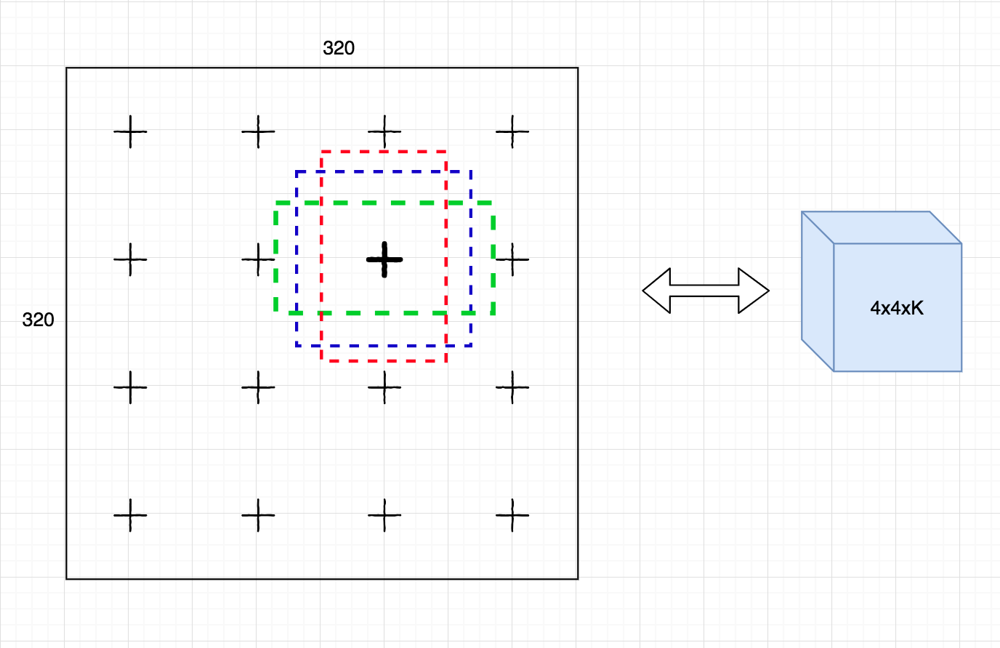
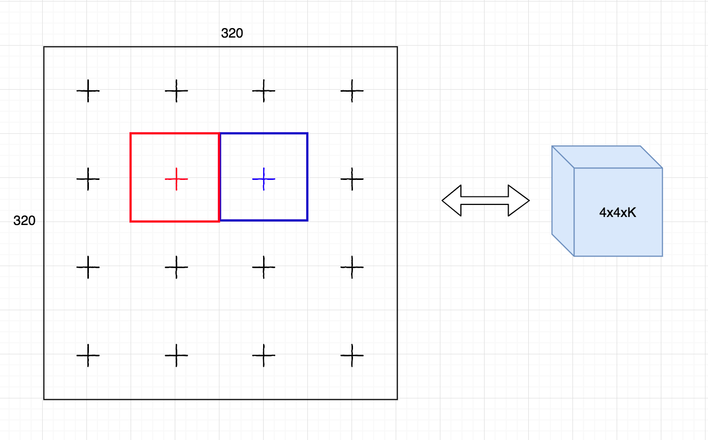
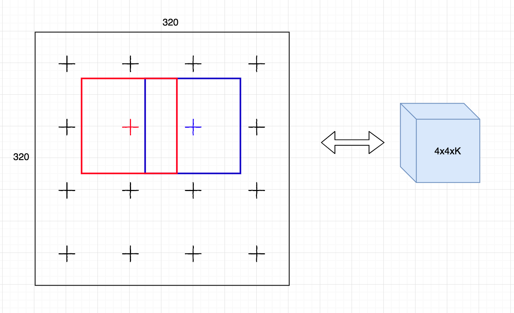
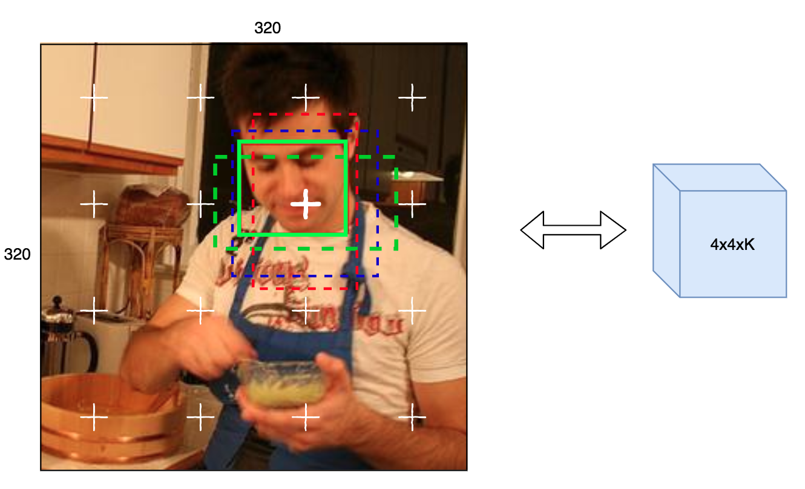

How to encode the ground truth bounding boxes and labels.
Define the anchor in a cell.
-
The feature maps sizes
fm_sizesat each detection layer will decide how many cell we should divide the image into. For example, if we have a detection layer of size4x4xK, (the height and width of feature maps are 4), the image will be divided into 16 cells (a grid of 4x4) as below. This rule is also applied for the other detection layers of different sizes. -
The aspect ratios
aspect_ratioseach detection layer will decide how many anchors in 1 cell. If we setaspect_ratios=[1, 2, 1/2]for this detection layer, then we will have 3 anchors as the figure (the dash color rectangles). For simplicity, I just draw 3 anchors at 1 cell for demonstration (the same is also applied for the other cell in the detection layer).

Size of anchors
- The size of the anchors will be defined by referenced size
anchor_sizesand aspect ratios in 1 cellaspect_ratios.
In the two below examples, for simple demonstration, I just pick the detection layer 4x4xK
with aspect_ratios=[1,]. The size of image is 320x320.
- In the first example, if we set the
anchor_size = 80, then the anchors of 2 consecutive cells will not overlap each other.

* In the second example, if we set the anchor_size = 120, then the anchors of 2 consective cell
will overlap each other.

For practical implementation, we usually set anchor_size > image_size/feature_map_size (the
second example). Therefore, more anchors will be tiled for better matching with ground truth object.
Anchor matching
In the example below, for simplicity, I just take 1 cell of feature maps from the detection layer
4x4xK, and 1 ground truth face.
- The ground truth box of face is denoted by
solid green rectangle. - The other default anchors are denoted by
dash color rectangles.
Now, we need to match which anchors (dash rectangles) with the face (solid rectangle). Therefore, we compute the IoU of the face with all the default anchors (including all anchors from all detection layers). Then we have three techniques to match anchors with ground truth boxes.
Note that: One anchor is only assigned with 1 ground truth box. However, one ground truth box can be assigned with more than 1 anchor.
First strategy For each ground truth box, we need to find the best anchor which has the maximum IoU with the ground truth box.
Second strategy
For each ground truth box, we can find as many anchors as possible with the condition that the
IoU between the anchor >= first_iou_threshold.
Normally, we use both the first and second strategies in object detection. However, for very small object (like tiny faces), some ground truth faces can't match enough the number of anchors which could decrease the recall rate. So, the compensation strategy is adopted to increase the number of anchor matches for small object.
Third strategy (compensation strategy which is used in face detection)
After the second strategy, if the number of matched anchors for some object is smaller than
topN (usually 3 < topN < 10 for optimal use), we need to find more anchors for
those objects. Those anchors must satisfy the following conditions:
- They were not assigned to any object before.
- One anchor is only assigned to 1 object.
- The object will be assigned to those anchors must have the maximum IoU threshold with those anchors.
- The IoU between the objects and the anchors must greater than the
second_iou_threshold.
Please read the source code at torch_object_detection/utils/box_coder.py to understand how to
implement three strategies.
